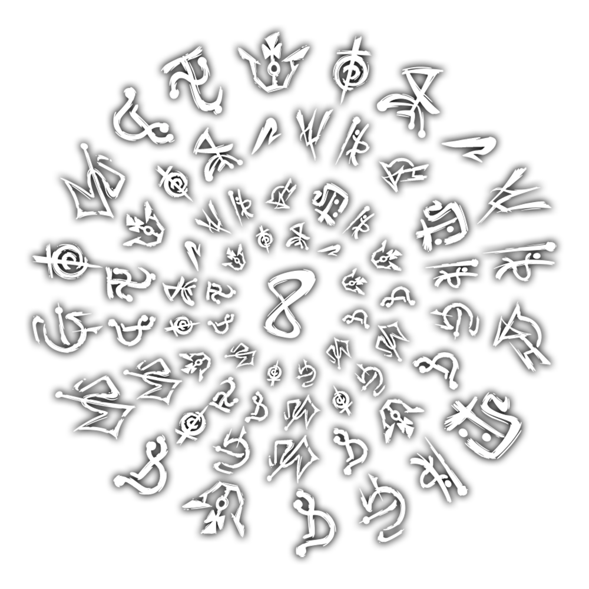

Entidade primordial da consciência

O Conhecimento é a entidade da consciência. Descobrir, aprender, conhecer e decifrar. Ter a própria percepção do Outro Lado e de suas entidades agrada o elemento de Conhecimento.
A entidade busca compreender e organizar o paranormal através da lógica e da percepção.